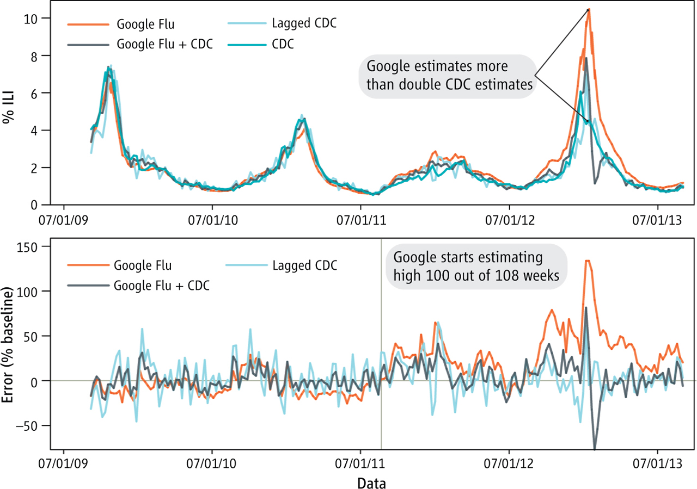

COMM 605
Week 6: The pitfall and biases of social media data
The case of Google Flu Trends

The example of Google Flu Trend which was discontinued in 2015. A team at Google and CDC using the data from search engine about influenzas, because people might search for flu remedies or flu symptom, and they used that do prediction. It was quite successful at the beginning then it turns out to be embarrassment. Google Flu Trends persistently overestimating flu prevalence for a much longer time. GFT also missed by a very large margin in the 2011–2012 flu season and has missed high for 100 out of 108 weeks starting with August 2011. And this error is not random errors. One of the potential causes are algorithmic confounding because Google began suggesting related search terms when people search for flu symptoms, which increase the so-called flu prevalence.
Potential biases
- Data bias: sparsity and noise; availability and representativeness
- Population bias: demographic attributes
- Behavioral bias: interaction bias; content consumption bias; self-selection and response bias
- Content production bias: the use of language(s), the contextual factors, power users, and different populations.
- Linking bias: network attributes; behavior-base and cpnnection-based social links;
- Temporal bias:
- Populations, behaviors and systems drifting over time
- Seasonal and periodic phenonmena
- Sudden-onset phenomena
- Time granularity can be too fine-grained to observe long-term phenomena: An example of Trump and hate speech on Twitter
- Time granularity can be too coarse-grained to observe short-lived phenonmena
- Dataset decay and lose utility over time
- Redundancy: lexical and semantic redundancy
Other biases
- Data source or origin
- Data collection: data acquistion, querying data, and (post-)filtering
- Data processing: data cleaning, enrichment (annotation), aggregation
- Data analysis: qualitative, descritive, inference and/or prediction
Three ethical challenges examples
Emotion contagion project
Four experimental groups:
- a “negativity-reduced” group, for whom posts with negative words (e.g., sad) were randomly blocked from appearing in the News Feed
- a “positivity-reduced” group, for whom posts with positive words (e.g., happy) were randomly blocked
- and two control groups, one for the positivity-reduced group and one for the negativity-reduced group.
Results:
- People in the positivity-reduced group used slightly fewer positive words and slightly more negative words relative to the control group. Likewise, people in the negativity-reduced group used slightly more positive words and slightly fewer negative words. Thus, the researchers found evidence of emotional contagion
Issues (PNAS and editorial expression of concern):
- Participants did not provide any consent beyond the standard Facebook terms of service and
- The study had not undergone meaningful third-party ethical review
Three ethical challenges examples
Tastes, Ties, and Time project
Beginning in 2006, each year, a team of professors and research assistants scraped the Facebook profiles of members of the Class of 2009 at a “diverse private college in the Northeastern U.S.” The researchers then merged these data from Facebook, which included information about friendships and cultural tastes, with data from the college, which included information about academic majors and where the students lived on campus.
Issue (oepn-source and privacy): Unfortunately, just days after the data were made available, other re- searchers deduced that the school in question was Harvard
These merged data were a valuable resource, and they were used to create new knowledge about topics such as how social networks form and how social networks and behavior co-evolve.
Three ethical challenges examples
Encore project
In March 2014, Sam Burnett and Nick Feamster launched Encore, a system to provide real-time and global measurements of Internet censorship. To do this, the researchers, who were at Georgia Tech, encouraged website owners to install this small code snippet into the source files of their web page.
Issue: Ben Zevenbergen concerned that people in certain countries could be exposed to risk if their computer attempted to visit certain sensitive websites, and these people did not con- sent to participate in the study.
If you happen to visit a web page with this code snippet in it, your web browser will try to contact a website that the researchers were monitoring for possible censorship. Before launching the project, the researchers conferred with their IRB, which declined to review the project because it was not “human subjects research” under the Common Rule.
Ethics in digital research
Four principles (Salganik, 2017):
- Respect for persons: treating people as autoonomous and honoring their wishes
- Beneficence: understanding and improving the risk/benefit profile of your study, and then deciding if it strikes the right balance.
- Do not harm and maximinze possible benefit and minimize possible harms
- Justice: ensuring the risks and benefits of reesarch are distributed fairly
- Respect for law and public interest: including all relevant stakeholders
But how?
Practical tips (Salganik, 2017):
- The IRB is a floor, not a ceiling
- Put yourself in everyone else shoes
- Think of research ethics as continuous, not discrete